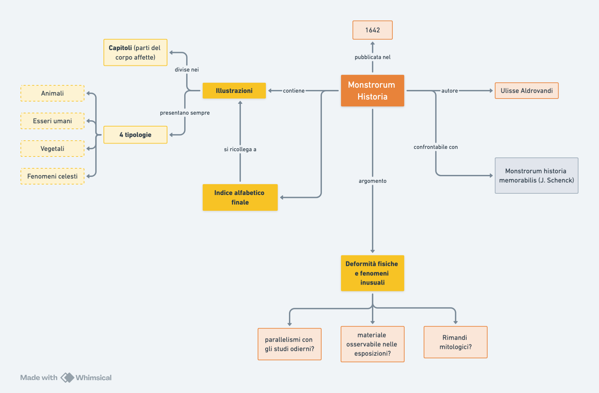
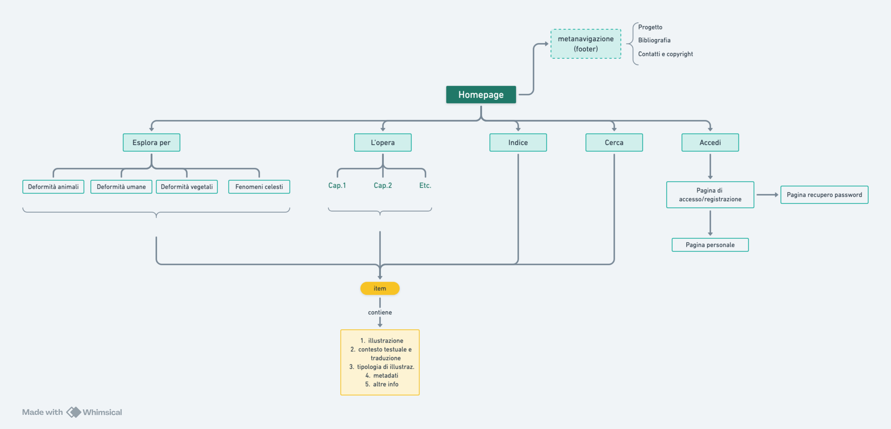
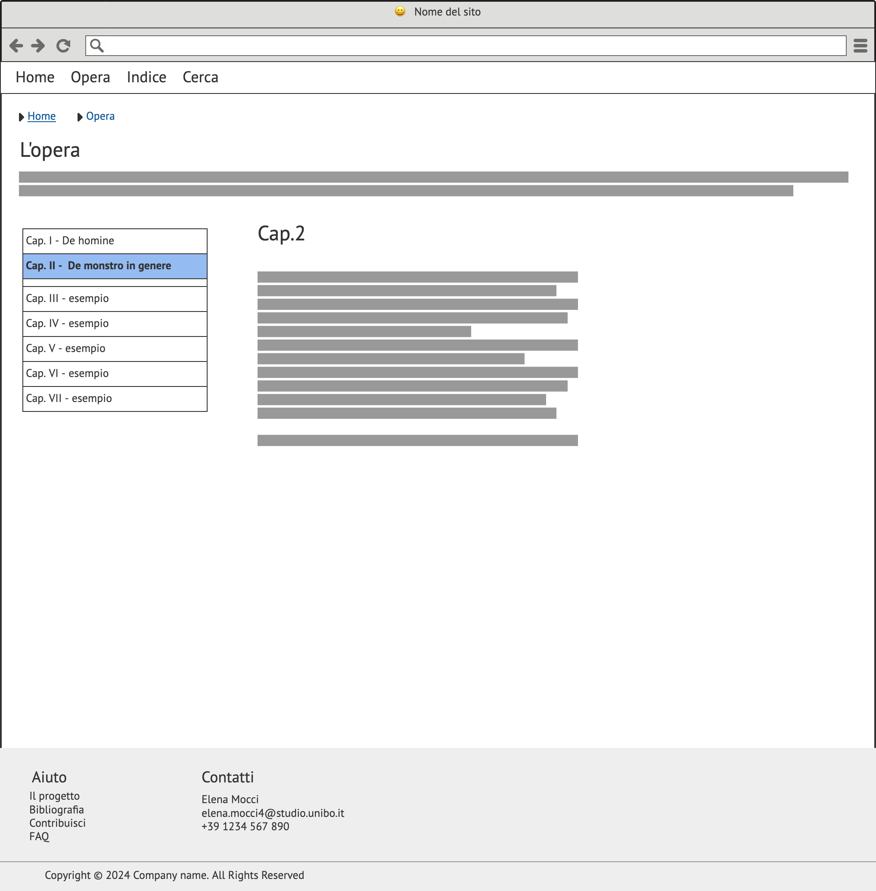
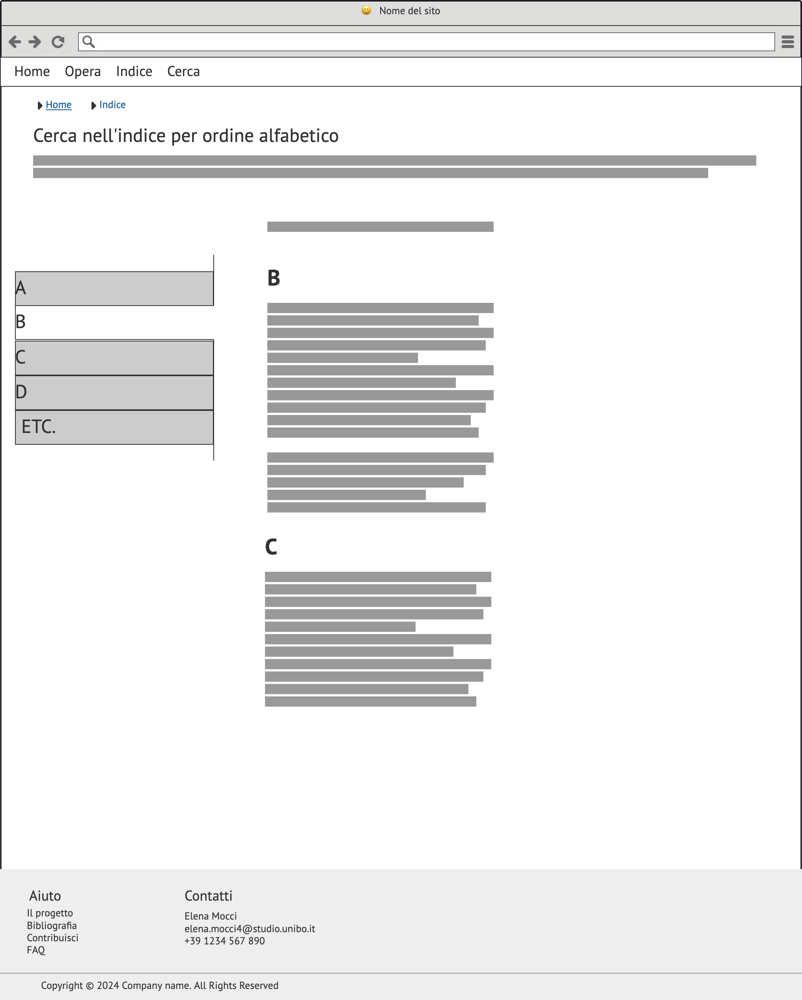
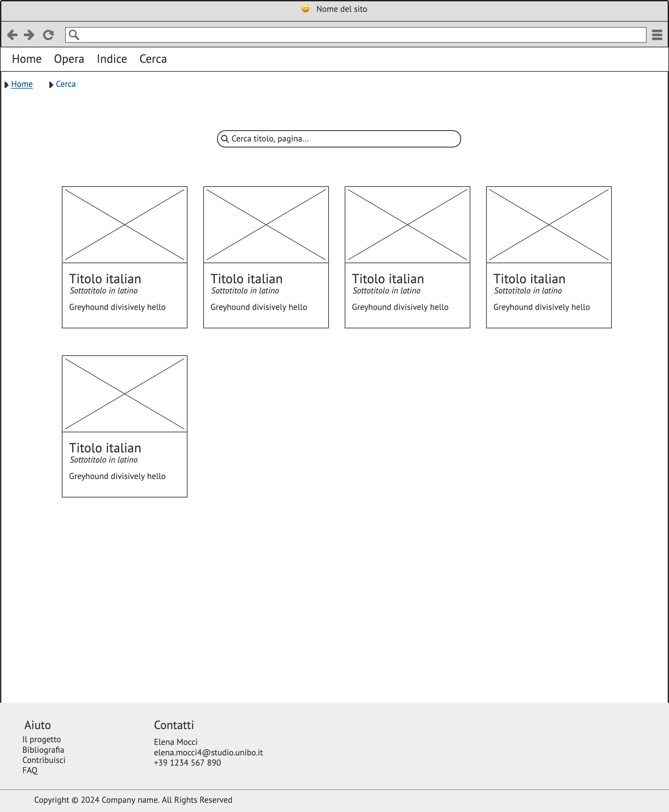
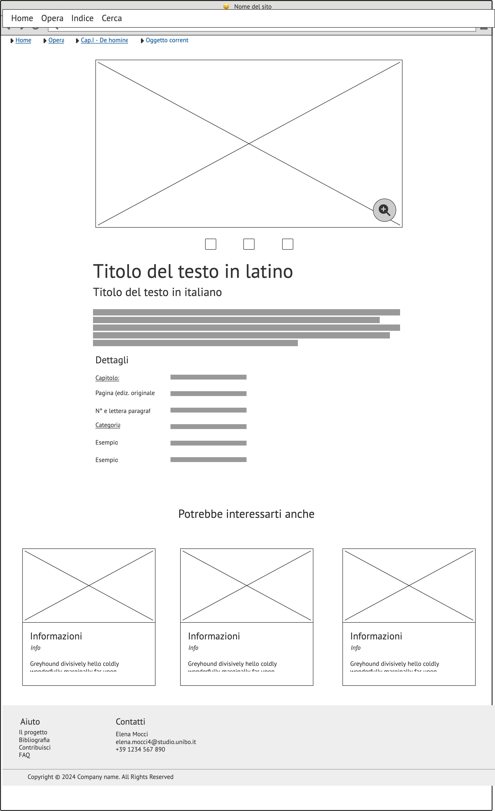
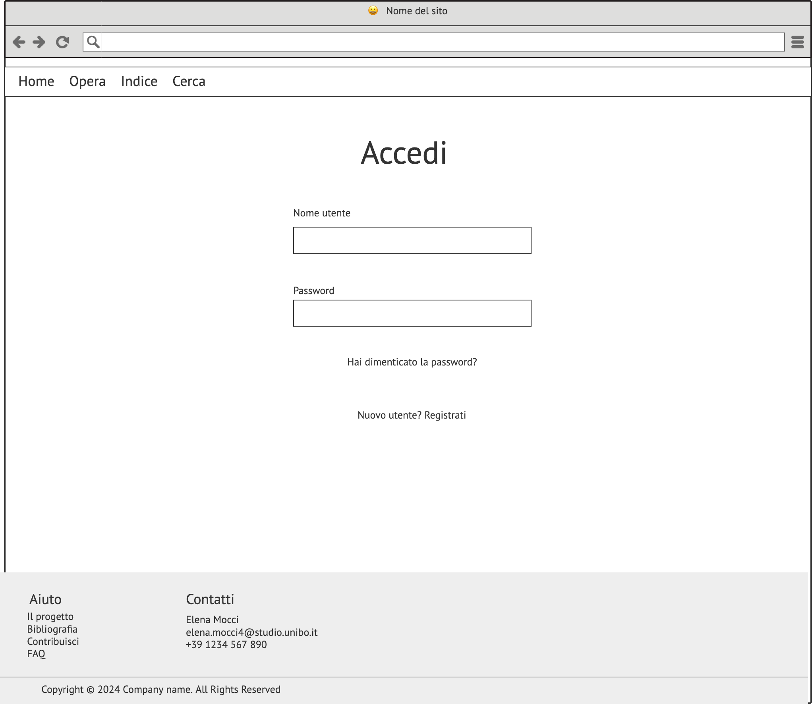

L’idea del progetto prevedeva di realizzare un sito che raccogliesse al proprio interno tutte le illustrazioni della Monstrorum Historia di Ulisse Aldrovandi, particolarmente ricca di immagini che il naturalista affianca ad una esaustiva raccolta di deformità umane, animali, vegetali e fenomeni celesti da lui osservati direttamente o di cui comunque ebbe notizia.
Il sito permette di operare un ricerca filtrata sulla collezione di illustrazioni, ingrandire le foto ad alta risoluzione, salvarle all’interno del proprio profilo, confrontarle e ottenere maggiori informazioni. Le illustrazioni sono corredate dall’estratto del testo – in latino - che fa loro riferimento e dalla rispettiva traduzione in italiano. Dove possibile, la pagina del singolo item cerca di fornire all’utente anche la patologia (nel suo nome attuale e secondo le caratteristiche osservate dalla moderna ricerca scientifica) corrispondente a quanto riportato da Aldrovandi; inoltre, mette a disposizione elementi aggiuntivi, come rimandi a collezioni dove è fisicamente possibile osservare l’oggetto che l’utente visualizza (es. alcune esemplari deformi imbalsamati risalenti al XIX secolo trovano riscontro nell’opera e sono studiabili dal vivo).
Vengono fornite anche ulteriori informazioni sulla vita del naturalista e su dove osservare le esposizioni a lui dedicate a Bologna, oltre che sulla collocazione di materiale bibliografico nelle biblioteche dell’ateneo.
È previsto inoltre un sistema che permetta agli utenti di contribuire, dalla sezione “Contribuisci” presente nel footer, all’individuazione delle patologie presenti o al suggerimento di collegamenti e altro materiale da aggiungere alle pagine dell’item.
Il tipo di utente a cui il prodotto è rivolto è per lo più chi sia interessato a fare ricerca su Aldrovandi, chi si occupi di storia della medicina (e sia dunque interessato a osservare l’evoluzione dell’approccio e della trattazione di queste patologie nel corso del tempo), a chi si interessi di illustrazione scientifica o di xilografie. Il sito tuttavia è accessibile anche a semplici curiosi o amanti delle stranezze, essendo presenti le traduzioni in italiano degli estratti in latino e le spiegazioni di cosa si possa trovare in ogni pagina.
Lo strumento di accesso principale è il computer, che permette una migliore visualizzazione delle illustrazioni, che sono il focus della raccolta
I contenuti utilizzati per la costruzione del sito sono tutti liberamente disponibili in rete, dalle informazioni relative alla Monstrorum Historia al testo dell’opera stessa, disponibile sul sito dell’Università di Bologna e su Internet Archive.
Non ho trovato altri siti che offrissero una collezione di illustrazioni dell’opera, o che in generale raccogliessero le illustrazioni di altre opere dello stesso autore in maniera esaustiva. Sono presenti, su questa e altre opere, solo articoli seguiti da alcune delle illustrazioni, o siti che riguardano le mostre fisiche presenti a Bologna.
Il sito che più si avvicina agli intenti di questo progetto è AMSHistorica, una piattaforma finalizzata alla conservazione di oggetti digitali di varia natura e che raccoglie le scansioni in alta definizione di tutte le opere - manoscritte e a stampa – dell’autore.
La navigazione all’interno del libro a stampa è resa possibile da un visualizzatore pdf con un menù laterale. Il menù permette di navigare all’interno di un indice cliccabile in cui sono visibili i capitoli con il rispettivo titolo, con dei dropdown menù che contengono i numeri di pagina presenti nel capitolo scelto. È anche possibile aggiungere dei segnalibri alle pagine, ingrandirle e modificare l’immagine (per esempio ruotando le pagine, regolando la luminosità della scansione etc.). Sono inoltre presenti numerosi metadati relativi all’oggetto digitale e i rimandi al sistema bibliotecario di ateneo per la consultazione dell’opera fisica. La sezione coi metadati, dalla quale si accede al visualizzatore pdf (dove i metadati non sono presenti, costringendo l’utente a tornare alla pagina precedente), è presente l’immagine della prima pagina del testo a stampa e una semplice lista di dati.
Il sito tuttavia non estrapola le immagini dal testo, inoltre non sono presenti né traduzioni del testo in italiano né strumenti aggiuntivi di ricerca o filtraggio. La navigazione disponibile nella top navbar non riguarda l’opera in particolare o le opere di Aldrovandi, ma l’intero catalogo.
Un sito da cui ho preso ispirazione è quello di Google Arts&Culture, interessante perché, nonostante sia finalizzato a raccogliere opere d'arte, è ampiamente costruito attorno alle immagini, similmente agli intenti di questo progetto. Ho ripreso la struttura che ha la pagina dei singoli item: viene presentata prima l'immagine ingrandibile, segue una breve descrizione e la lista dei metadati, infine vengono suggeriti all'utente dei contenuti aggiuntivi. Lo stile semplice e pulito della pagina permette all'utente di concentrarsi sull'immagine e di navigare facilmente fra le informazioni che vengono fornite.
In virtù del grande numero di immagini presenti nella Monstrorum Historia ho trovato interessante la possibilità di organizzarle a partire da categorie che non sono evidenti dalla struttura dell’opera. Se infatti l’opera è divisa in capitoli che trattano ognuno una particolare parte del corpo colpita da deformità (es. la testa, la pelle, gli arti etc.), non è così immediato avere sott’occhio le sole illustrazioni dedicate agli animali o all’essere umano (che sono infatti mischiate all’interno dei capitoli, o che comunque sono inframezzate da lunghe porzioni di testo); più accessibili, ma comunque inserite in un’ampia trattazione, le illustrazioni riguardanti stranezze vegetali e fenomeni celesti particolari. Per questo motivo ho individuato 4 tipologie tramite cui ripartire le immagini.
Altro criterio di navigazione, suggerito dallo stesso indice presente nell'opera, è quello per ordine alfabetico
Interessante poi il collegamento con i corrispettivi fenomeni o deformità osservati dalla scienza moderna, che possono offrire vari spunti di ricerca. Ancora, ho individuato come ulteriori elementi di interesse eventuali rimandi mitologici (essendo affrontate nell'opera anche creature mitologiche) e collegamenti con le esposizioni/collezioni relative al lavoro di Aldrovandi presenti a Bologna e online
Nella homepage è possibile accedere al sistema di navigazione principale, oltre che alla metanavigazione (sempre presente nel footer) e ai contenuti aggiuntivi.
Nella top navbar della homepage sono collocati:
Nella home page è anche possibile trovare uno slideshow cliccabile che propone all’utente di consultare le illustrazioni per tipo di fenomeno o deformità (umana, animale etc.). La homepage inoltre rimanda a pagine che contengono maggiori informazioni non direttamente collegate agli items, come per esempio le collezioni disponibili a Bologna su Ulisse Aldrovandi.
Dalle pagine sopra descritte, ovvero L’opera, Indice, Cerca e quelle legate a deformità di uno specifico tipo, si accede ai singoli item.
Le categorie descrittive degli item sono:
Nella homepage è possibile trovare l’header che contiene il nome del sito, con sotto la top navbar, dalla quale si può accedere alla pagina home (segnata come attiva, alla pagina L’opera, Indice, Cerca e Accedi. Sono presenti poi sei sezioni:
La pagina contiene, oltre alla top navbar e al footer identici a quelli della homepage, delle tabs con menù di navigazione verticale posto a sinistra, che permettono di visualizzare sulla destra la lista dei titoli delle illustrazioni presenti nel capitolo
La pagina contiene un indice alfabetico sulla parte destra, mentre sulla sinistra è presente un menù di navigazione verticale, i cui pulsanti rimandano alla lettera corrispondente nell’indice. Dalle voci è possibile accedere agli items
La pagina contiene, oltre alla top navbar e al footer identici a quelli della homepage, una barra di ricerca, sotto alla quale si trova un sezione in cui appaiono gli items (sotto forma di cards) che soddisfano i criteri della ricerca.
La pagina presenta, oltre alla top navbar e al footer identici a quelli della homepage, l’immagine ingrandibile dell’illustrazione, seguita dal titolo dell’illustrazione in latino e a seguire quella in traduzione italiana. Viene successivamente fornito un estratto del testo in latino che descrive l’illustrazione, e la sua traduzione in italiano.
Segue la sezione contenente eventuali contenuti aggiuntivi e quella dei metadati. Scorrendo ancora è possibile visualizzare delle illustrazioni consigliate e correlate all’item che l’utente sta visualizzando.
La pagina permette di accedere inserendo nome utente e password, di recuperare la password e di registrarsi se non si è già iscritti.
Il sito utilizza come strumento di navigazione principale la top navbar, che per questo motivo è sempre visibile in ogni pagina, insieme al footer, che si presenta come strumento principale per la metanavigazione. Il sito presenta in homepage un divisione dei contenuti per fasce orizzontali, con dei titoli finalizzati a chiarire il tema della sezione visualizzata dall’utente.
Nelle pagine di navigazione secondaria appaiono le breadcrumbs cliccabili, che permettono all’utente di orientarsi nell’architettura del sito, oltre che di tornare indietro nelle pagine. Queste pagine presentano all’inizio inoltre una breve spiegazione di che servizio offra la pagina. Nelle pagine che contengono gli items divisi per tipo di deformità o fenomeno è presente anche la pagination, che permette di scorrere fra i risultati. In queste pagine i menù o i filtri si trovano sempre sul lato sinistro dello schermo, in modo da presentare all’utente un’architettura coerente e riconoscibile. Nella pagina dell’item vengono collocate in fondo delle illustrazioni suggerite e correlate a quella visualizzata.
il sito è organizzato in modo da non affollare eccessivamente lo schermo con un gran numero di elementi, lasciando maggiore spazio invece alle immagini, tramite utilizzo di cards e slideshows.
Gli elementi cliccabili offrono sempre un feedback: tendenzialmente, il font viene sottolineato e/o cambia colore, mentre i pulsanti, sia quelli della top navbar che quelli dei menù, cambiano colore al passaggio del cursore, e se attivi presentano un colore diverso da quelli inattivi (e ancora diverso da quello assunto al passaggio del cursore). Le cards presentano un bordo più spesso e scuro al passaggio del cursore.
I menù di navigazione sono tutti sticky, in modo che l’utente non li perda di vista e non sia costretto a tornare all’inizio della pagina per utilizzarli durante la ricerca.
I colori scelti sono il blu petrolio e le sue sfumature, usati soprattutto per gli elementi di navigazione; un grigio molto chiaro è usato per lo sfondo e per le aree “vuote”; un giallo ocra viene usato per evidenziare eventuali parole o elementi importanti. Sono presenti delle icone sia nella top navbar (nel pulsante Accedi) che nella pagina dei singoli item, dove, sotto all’illustrazione, sono presenti un cuore (per salvare la foto), un’icona per scaricare il file dell’immagine e un’icona che permette di copiare il link della pagina per poterla condividere.
I titoli hanno un font e un peso distinto rispetto al corpo del testo. Per il testo è stato utilizzato il font Open sans, un font sicuro per il web e sans-serif, altamente leggibile. Per i titoli è stato scelto il font Playfair, più adatto a porzioni di testo poco estese, come appunto sono i titoli, e utile a evidenziare e scandire gli spazi logici della pagina. Entrambi i font comunque sono dotati di fallback fonts in caso di errato caricamento da parte del browser.
Nella homepage viene data la possibilità all’utente di cercare per soggetto dell’illustrazione; le pagine dedicate ai vari soggetti sono dotate di filtri che permettono di scegliere l’ordine in cui sistemare le illustrazioni, cercare per capitolo e per disponibilità di contenuti aggiuntivi. Accedendo alla pagina L'opera è possibile trovare una divisione degli items per capitoli; la parte dedicata all’indice permette di sfogliare le illustrazioni in ordine alfabetico.
Ogni pagina è dotata di breadcrumbs che permettano all’utente di orientarsi nella struttura del sito, mentre le pagine che offrono numerosi items sono dotate di pagination per una navigazione più ordinata.
Potrebbero essere aggiunti dei filtri nella pagina di ricerca per filtrare i risultati che l’utente ottiene.
I tool utilizzati comprendono:
Raccogliendo tutte le illustrazioni e gli estratti dell’opera a esse riferite si può pensare di utilizzare un tool di analisi testuale più accurato del tagcloud.
Si potrebbe pensare anche di fornire uno strumento che metta a confronto le illustrazioni e la trattazione di Aldrovandi con i contenuti della Monstrorum Historia Memorabilis del medico tedesco, – e coevo di Aldrovandi – Johann Georg Schenck, anch’essa disponibile liberamente online all’interno di Internet Archive e similissima negli intenti. Quest’ultimo potrebbe essere utile per utenti interessati ad una ricerca più tecnica e specialistica.